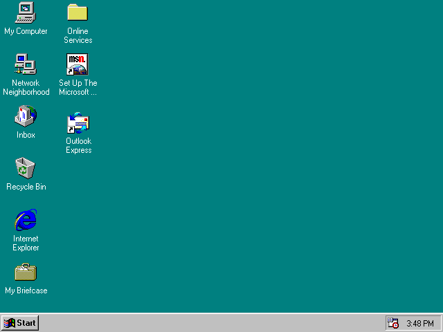

Как включить компьютер?Что бы включить компьютер нужно нажать кнопку на передней панели системного блока. Из-за различных вариантов дизайна корпуса системного блока, кнопка может находиться в различных местах и иметь разную форму. Обычно это самая большая круглая кнопка. На системном блоке так же есть небольшая кнопка, которую иногда очень трудно заметить.Это кнопка перезагрузки компьютера. На некоторых современных системных блоках кнопка перезагрузки может отсутствовать. После загрузки системы на экране появляется рабочий стол. Мы подробно рассмотрим его в следующем уроке.  |
Читать далее: Навигация |